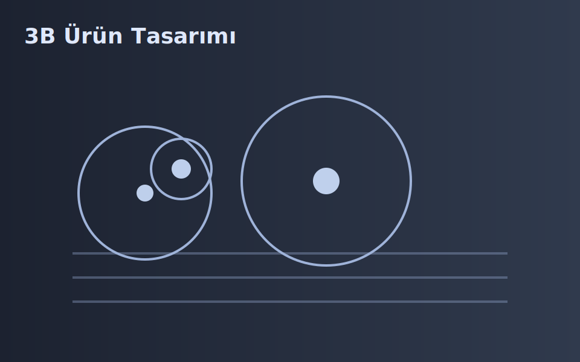

3 Boyutlu Ürün Tasarımı
Fikirlerinizi üretime uygun 3B modellere dönüştürüyoruz. Ergonomi, tolerans ve montaj odaklı tasarım yaklaşımıyla prototip süresini kısaltıyoruz.
 KRKT
KRKT
Fikirlerinizi üretime uygun 3B modellere dönüştürüyoruz. Ergonomi, tolerans ve montaj odaklı tasarım yaklaşımıyla prototip süresini kısaltıyoruz.
Mevcut parçalarınızı tarayıp ölçülendiriyor, dijital ikizini oluşturuyoruz. Uyumlu yedek parça ve revizyon çizimleri hazırlıyoruz.
CNC torna ve freze hatlarımızla kritik toleranslı parçaları hassasiyetle üretiyoruz. Malzeme sertifikaları ve proses izlenebilirliği sağlıyoruz.
Sürecinize özel makinaları baştan sona tasarlayıp üretiyoruz. Emniyet, ergonomi ve bakım kolaylığı ilkeleriyle devreye alıyoruz.
Aşınan/hasarlı parçalarınızı hızlı ve belgeli şekilde yeniliyoruz. Ölçü kontrol raporları ve malzeme sertifikalarıyla teslim ediyoruz.
Karbon çelik ve paslanmazda kalite odaklı kaynaklı imalat yapıyoruz. Fikstürleme, NDT kontrolleri ve yüzey işlemleri entegre edilir.